You can see our videotutorials of WooCommerce plugins at this link in our support forum.
Automatic installation is the easiest option as WordPress handles the file transfers itself and you don’t even need to leave your web browser. To do an automatic install of WooCommerce log in to your WordPress admin panel and go to: Plugins > Add New.
In the search field type “WooCommerce” and click Search Plugins. Once you’ve found the plugin you can view details about it such as the the point release, rating and description. Most importantly of course, you can install it by simply clicking Install Now. After clicking that link you will be asked if you’re sure you want to install the plugin. Click “yes” and WordPress will automatically complete the installation.
After you’ve installed and activated the plugin, be sure to select ‘Install WooCommerce Pages‘ to get started.
Inside this panel you’ll find all the core WooCommerce settings such as catalog settings, pages, payment gateways, shipping methods and tax rates accessible via the tabs at the top of the screen.
To configure your shop go to WooCommerce > Settings. Then browse through the tabs below to get more information on the WooCommerce Options.
For more details, please follow the official docs
Adding a simple product is a straight forward process and not too dissimilar from authoring a standard WordPress post. In the Products menu click Add Product; you will be presented with a familiar interface, and should immediately see where to type the product title and full description.
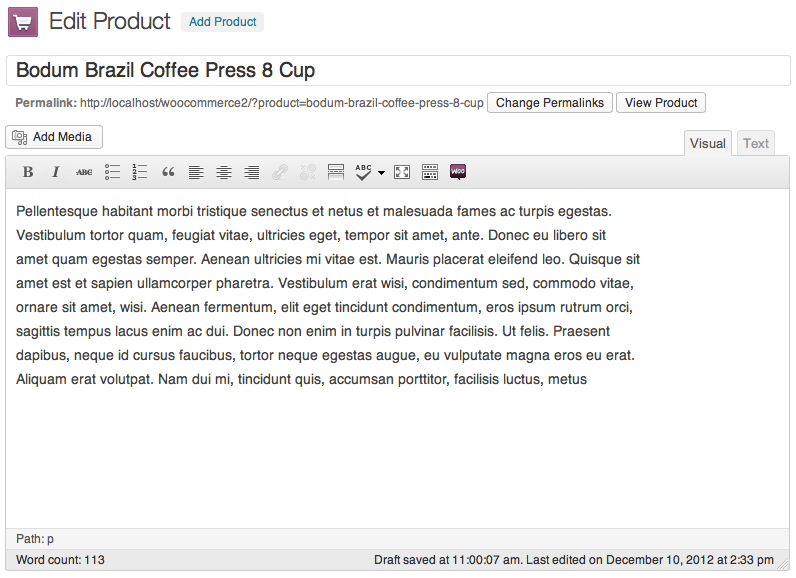
Next is the Product Data tab set. This is where the majority of the product data is input.
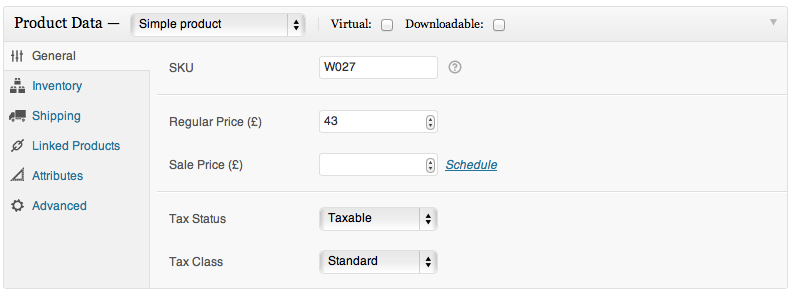
For more details, please follow the official docs
Variable products are a great feature of WooCommerce for offering variations of a product with different prices, stock and more. They can be used for offering variations of a product e.g. a large t-shirt vs a small t-shirt. Each variation can have different properties and prices.
Set the product type: to add a variable product first selection the type ‘variable’ from the product type dropdown. The interface will change to reflect your selection.
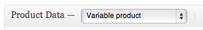
Define variation attributes: on the attributes tab add some attributes to your product. You can use global attributes or define some custom ones specific for your product.
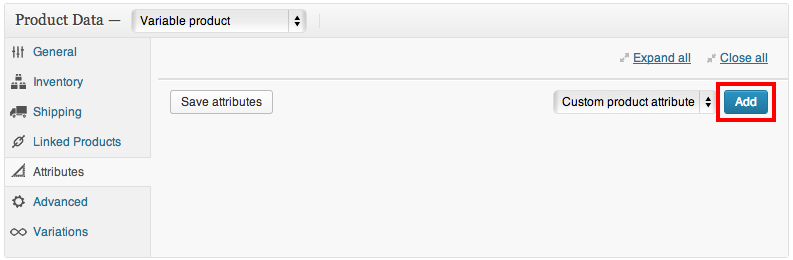
Make sure to assign all values of the attribute to the variable product which will become options and check the 'variation' checkbox on each attribute to tell WooCommerce its for your variations:
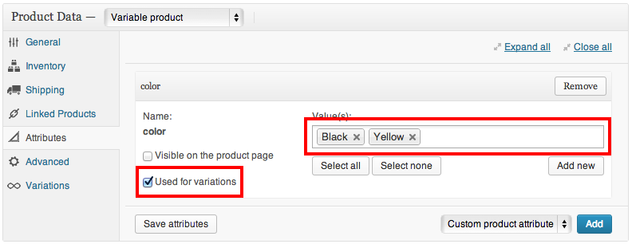
Add variations: After saving your product you can now begin to add variations, or link all possible variations. To add a variation, click the ‘add variation’ button. A new blank row will appear ready for you to input the data.
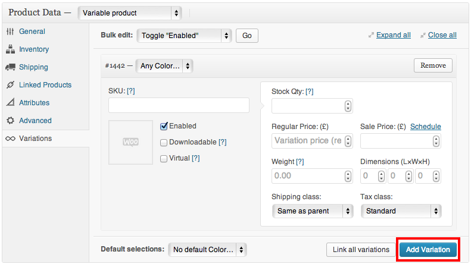
Price fields must be set per product
For more details, please follow the official docs
Product galleries simply display all images attached to a product, with the Featured Image being the primary image.
You can create a product gallery using the same method as adding a featured image, rather using the Product Gallery meta box instead.
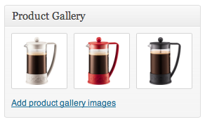
For more details, please follow the official docs
On the catalog tab, WP Dashboard -> WooCommerce -> Settings -> Catalog, of the WooCommerce settings you’ll see three image dimension inputs.
The images you upload will be resized to match the values your input here accurately as possible. IE if your settings are 100×100 and you upload a 300×600 image it will be resized to 100×200. You can also choose to ‘hard crop’ your images which will force them to be the size specified in these settings, regardless of the raw image you upload, but will be cropped rather than distorted in scale.
Remember if you change these settings after uploading product imagery you will need to regenerate your thumbnails within WordPress for the changes to be applied to your current imagery. To do this we recommend using the Regenerate Thumbnails plugin.On the catalog tab, WP Dashboard -> WooCommerce -> Settings -> Catalog, of the WooCommerce settings you’ll see three image dimension inputs.
To use the YITH WooCommerce Ajax Navigation you need to create an attribute in Products -> Attributes with more Terms.
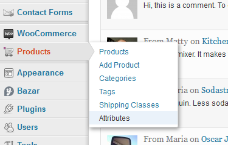
Create more products with the attributes created before.
After, go to Appearance -> Widgets and insert the widget called YITH WooCommerce Ajax Navigation in a sidebar. You need to insert one widget for each attributes.
NOTE: the sidebar must be set in a Shop page
Set the widget with:
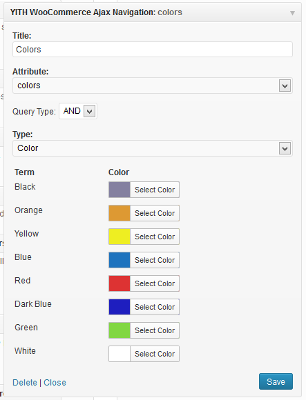
You can set the options of this plugin in WooCommerce > Settings >Products Compare.
You can show the button Compare checking the options "Show button in single product page" and "Show button in products list".
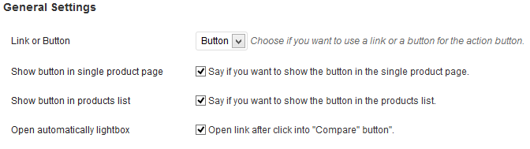
In Table Settings you can set the attributes that it will be show in the compare popup.
For yse the Compare plugin, you need simple to create a product with some attributes and click on the popup button. Now you see the popup with the products:
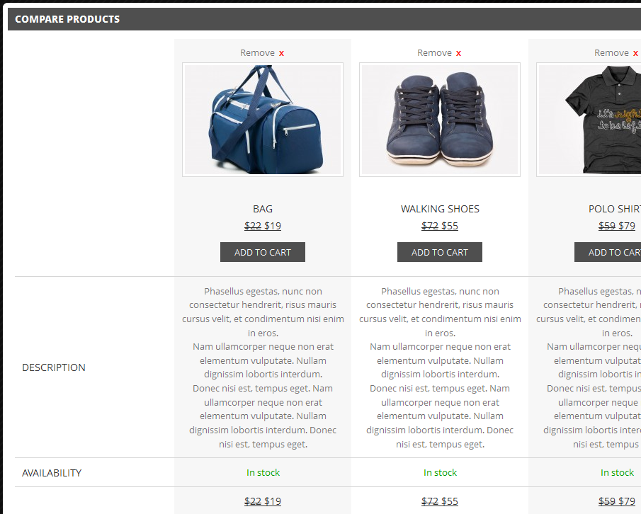
If you want add a custom link in the menu for open a popup (for example in the Topbar menu), you can add the link with this CSS class: yith-woocompare-open
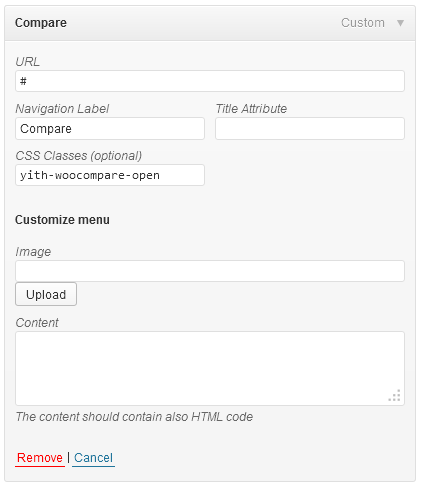